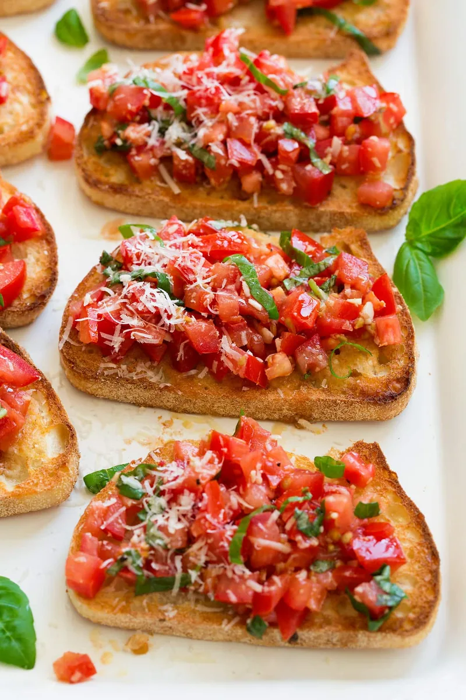

Appetizer
Bruschetta
Thick slices of bread, rubbed with garlic, drizzled with olive oil, often topped with tomatoes and herbs.
INGREDIENTS
Tap items to check offINSTRUCTIONS
Tap a step to mark completeBruschetta
1. Combine tomatoes, chopped garlic, red onion, vinegar, oil, salt, pepper, and basil.
2. Set aside
3. Preheat oven on broil
4. Slice bread into 1/2 inch thick slices.
5. Place on a tray and spray lightly with olive oil.
6. Toast bread under broiler, until golden, watching closely not to let it burn.
7. When bread is toasted, rub each piece with whole garlic clove.
8. Place bread on a platter and top with tomato mixture.
9. Serve immediately or the bread will become soggy.